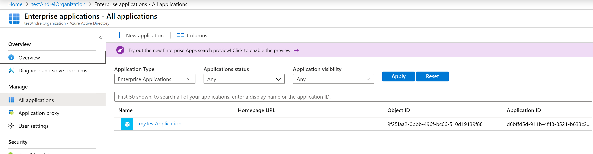
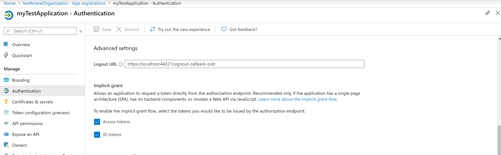

Documentation integrating Identity Server with BD, Windows AD and Azure AAD
Run the project
Download Sources.
Run the project AspNetCoreWindowsAuth.sln .
The following screen should show :

Code Integration with local database
I have used Sqlite , since it does not require any installation of Server
When the user signs in with UserName and Password, the following code is called
The events are for notifying IdentityServer about our user
External Integration - with local Active Directory
See in Startup.cs the following
When the user clicks the Windows authenticatio the following code is called
External Integration - with Azure Active Directory
This was by far the most complicated
As a pre-requisites , we need to configure the Azure Active Directory and grab the client Id for the application.
The code in the startup.cs os
And the code that retrieves the user is:
Configure Azure Active Directory
This implies to go to portal.azure.com.
First you create a new application in the Azure Active Directory

Please retain the applicationId in order to put to the code
Do not forget about checking the token on authentication

because of this code
And that is all that needs to be done.